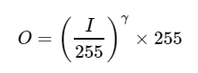
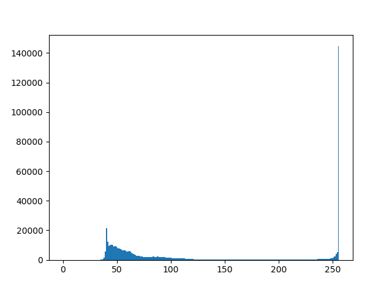
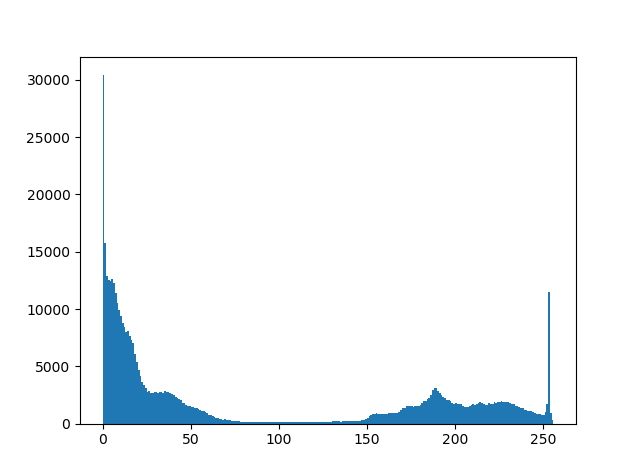
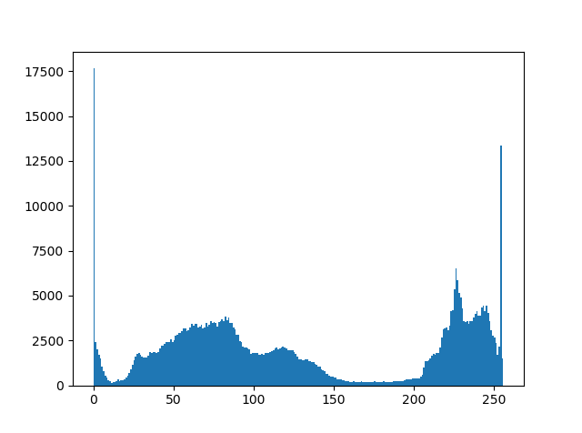

伽马校正(Gamma Correction)
伽玛校正通过对输入值进行非线性变换，可以达到校正图像的亮度：
伽马校正使用的非线性方程：I为输入像素，O为输出像素，γ为伽马值
由于此关系是非线性的，因此每个像素的变换效果都不相同，取决于其原始值。
输入像素值与输出像素值与伽马值之间的关系
当γ<1时，原本暗的区域将变亮，直方图将向右移动，而当γ>1时则相反。
例子：校正曝光不足的图像
使用上两章提到的变换对比度和亮度方法，以下图片使用α=1.3，β=40校正：可见，整体亮度已得到改善，但是你能发现经过处理后的云色彩已过度饱和(摄影中称为highlight clipping)。
α=1.3，β=40

接下来以下图片使用伽马校正(γ=0.4):
伽玛校正在校正图像之余对图像的饱和度并没有太大的影响，因为映射是非线性的，所以不像上个方法那样出现数值饱和。
γ=0.4




上：α，β校正后的直方图；中：原图的直方图；下：γ校正后的直方图
上面比较了三个图像的直方图（三个直方图之间的y范围不同）。大多数像素值都位于原始图像直方图的下部。经过α，β校正后，由于饱和度以及右移，我们可以在255处观察到一个大峰。经过伽玛校正后，直方图虽然向右移动，但是暗区域中的像素比亮区域中的像素移动更多。上：α，β校正后的直方图；中：原图的直方图；下：γ校正后的直方图
伽马校正代码：
Mat lookUpTable(1, 256, CV_8U);
uchar* p = lookUpTable.ptr();
for( int i = 0; i < 256; ++i)
p[i] = saturate_cast<uchar>(pow(i / 255.0, gamma_) * 255.0);
Mat res = img.clone();
LUT(img, lookUpTable, res);
查找表用于提高计算性能，因为只需要计算一次256个值。